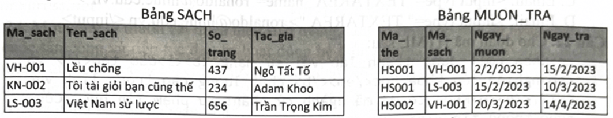
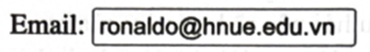
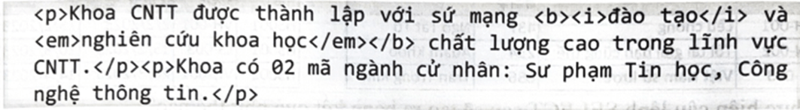
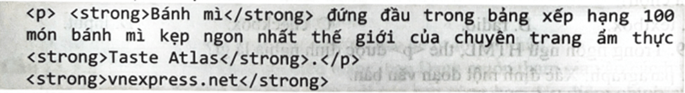
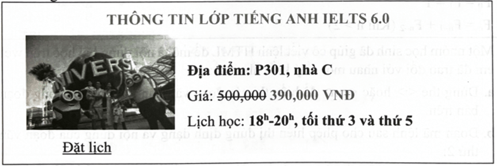
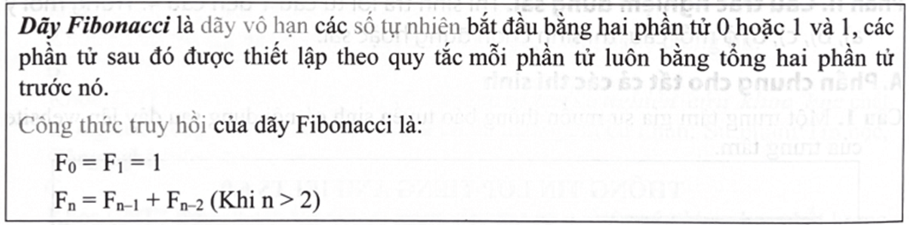
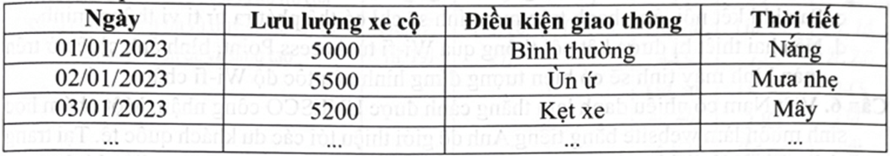
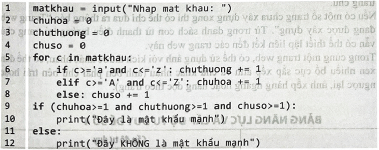

Phần I. Câu trắc nghiệm nhiều phương án lựa chọn. Thí sinh trả lời từ câu 1 đến câu 24. Mỗi câu hỏi thí sinh chỉ chọn một phương án.
Câu 1. Ứng dụng của Trí tuệ nhân tạo (AI) không hỗ trợ được công việc nào sau đây trong khám và điều trị của các nhân viên ngành y tế?
A. Chuẩn đoán bệnh dựa trên hình ảnh phim X-quang.
B. Phẫu thuật nội soi.
C. Tư vấn người bệnh dựa trên hệ chuyên gia.
D. Thực hiện các xét nghiệm huyết học.
Câu 2. Khả năng nào sau đây của AI là một nguy cơ đối với quyền riêng tư?
A. Phân tích lịch sử hành vi để đưa ra gợi ý, tư vấn sản phẩm và dịch vụ.
B. Nhận dạng khuôn mặt tự động để điểm danh hoặc mở khoá điện thoại.
C. Thực hiện yêu cầu của người dùng qua nhận diện giọng nói.
D. Thu thập và phân tích dữ liệu cá nhân để trích rút thông tin.
Câu 3. Phương án nào sau đây là một ví dụ về khả năng suy luận của hệ thống gợi ý dựa trên AI?
A. Đưa ra danh sách video trên YouTube dựa trên sở thích cá nhân.
B. Đưa ra danh sách các sản phẩm sắp xếp theo giá từ thấp đến cao.
C. Đưa ra danh sách các sản phẩm phù hợp với một từ khoá tìm kiếm.
D. Đưa ra danh sách các sản phẩm bán chạy nhất trong tuân qua.
Câu 4. Khi nói về AI rộng hay AI mạnh, phát biểu nào sau đây không đúng?
A. Là một hệ thống có khả năng tự học, tự cải thiện qua thời gian mà không cần sự can thiệp của con người.
B. Là hệ thống có khả năng thích ứng với tình huống mới và giải quyết được nhiều nhiệm vụ phức tạp.
C. Là hệ thống có tri thức, ý thức khi hành động giống như con người thực.
D. Là hệ thống có khả năng xử lí nhiều nhiệm vụ với tốc độ nhanh hơn của con người.
Câu 5. Chức năng của giao thức IP là gì?
A. Định danh và định tuyến các gói dữ liệu trong mạng.
B. Quản lí việc truyền dữ liệu theo từng ứng dụng trong mạng.
C. Đảm bảo truyền tải dữ liệu đúng thứ tự trong mạng.
D. Truyền tải và trao đổi thông tin giữa máy chủ web và trình duyệt web.
Câu 6. Cáp mạng truyền tín hiệu bằng ánh sáng được gọi là gì?
A. Cáp quang.
B. Cáp đồng trục.
C. Cáp xoắn đôi.
D. Cáp UTP.
Câu 7. Công nghệ nào sau đây cho phép các thiết bị giao tiếp với nhau trong một khoảng cách ngắn hoặc phạm vi hẹp mà không cần dây cáp?
A. Bluetooth.
B. Ethernet.
C. TCP/IP.
D. Firewall.
Câu 8. Mệnh đề nào sau đây là sai khi nói về việc lắp đặt hệ thống mạng trong một phòng máy?
A. Không cần xác định trước vị trí các thiết bị mạng trước khi lắp đặt.
B. Có thể sử dụng các Switch để kết nối các máy tính với nhau.
C. Thiết bị mạng cần được bảo dưỡng và kiểm tra định kì.
D. Không thể sử dụng cáp quang để kết nối giữa các máy tính.
Câu 9. Phòng máy tính trường em có 20 thiết bị được đánh số từ 1 đến 20 cần truyền và chia sẻ dữ liệu với nhau thông qua cáp mạng. Cách thực hiện kết nối nào sau đây là phù hợp nhất để có thể thực hiện được yêu cầu trên?
A. Kết nối dây mạng giữa máy 1 và máy 2, máy 3 và máy 4, máy 5 và máy 6,..., máy 19 và máy 20.
B. Kết nối tất cả các máy vào một Switch.
C. Kết nối tất cả các máy vào một Modem.
D. Kết nối dây mạng giữa máy 1 và máy 2, máy 2 và máy 3, máy 3 và máy 4,... máy 18 và máy 19, máy 19 và máy 20.
Câu 10. Cho quy trình thực hiện chia sẻ thư mục trong mạng LAN như sau:
Bước 1: Bật tính năng chia sẻ thư mục trên máy tính muốn chia sẻ.
Bước 2: Chọn thư mục cần chia sẻ.
Bước 3:
Bước 4: Chia sẻ thư mục.
Đáp án nào sau đây là phù hợp nhất để điền vào bước 3?
A. Thiết lập quyền truy cập cho người dùng.
B. Mở File Explorer trên máy tính.
C. Tìm và chọn mạng Wi-fi tương ứng với Access Point.
D. Cài đặt driver máy in trên máy tính.
Câu 11. Một bạn học sinh cần thực hiện in bài tập đã làm trong phần mềm Microsoft Word thông qua một máy in đã được chia sẻ trong mạng LAN trên phòng thực hành Tin học.
Quy trình nào sau đây bạn học sinh cần làm để thực hiện công việc trên?
A. Tìm máy in trong mạng → Kết nối máy tính vào mạng LAN → Thêm máy in vào máy tính → In bài làm.
B. Mở trình điều khiển máy in → Cài đặt driver cho máy in → Kết nối máy tính vào mạng LAN → In bài làm.
C. Kết nối máy tính vào mạng LAN → Tìm máy in trong mạng → Thêm máy in vào máy tính → In bài làm.
D. Mở trình duyệt web → Truy cập vào mạng LAN → Tìm máy in → In bài làm.
Câu 12. Hành vi nào sau đây thể hiện việc ứng xử nhân văn khi tham gia thế giới ảo?
A. Chia sẻ thông tin cá nhân của người khác mà không có sự cho phép.
B. Tôn trọng quyền riêng tư và tôn trọng bản quyền.
C. Làm giả thông tin và phát tán tin đồn.
D. Sử dụng thông tin cá nhân của người khác để tư lợi cá nhân.
Câu 13. Khi tham gia một khoá học trên mạng, bạn Danh muốn tham gia vào các buổi thảo luận trực tuyến để trao đổi kiến thức với các bạn cùng học. Ưu điểm chính của việc này so với thảo luận trong lớp học truyền thống là gì?
A. Tiết kiệm thời gian di chuyển và chi phí.
B. Tạo cơ hội cho sự giao lưu và hợp tác với người học khác từ khắp nơi trên thế giới.
C. Giảm thiểu sự rủi ro gặp phải các vấn đề kĩ thuật.
D. Khả năng trải nghiệm không gian học trực tuyến độc đáo.
Câu 14. Trong một cuộc trò chuyện trực tuyến, bạn Việt nhận được một câu hỏi có nội dụng khá nhạy cảm từ một người tham gia. Phương án nào sau đây là cách tốt nhất để đối phó với câu hỏi này một cách nhân văn và tôn trọng?
A. Bỏ qua câu hỏi và tiếp tục trò chuyện.
B. Trả lời câu hỏi một cách thẳng thắn và chính xác.
C. Yêu cầu người đặt câu hỏi nêu rõ hơn về ý của họ.
D. Gửi một tin nhắn riêng để trao đổi chi tiết về câu hỏi.
Câu 15. Cho hai bảng SACH và bảng MUON_TRA trong CSDL về thư viện của một trường học như hình sau:

Thực hiện câu lệnh SELECT sau sẽ tạo ra bảng kết quả như thế nào?
SELECT * FROM SACH INNER JOIN MUON_TRA ON SACH.Ma_sach = MUON_TRA.Ma sach
A. Bảng kết quả bao gồm có 7 cột và có 6 dòng vì hai cột Ma _ sach được gộp lại thành một cột.
B. Bảng kết quả bao gồm có 8 cột là tổng số cột của hai bảng và có 3 dòng vì bảng MUON_TRA là bảng chứa khoá ngoài Ma_sach có 3 dòng.
C. Bảng kết quả bao gồm có 7 cột là tổng số cột của hai bảng và có 3 dòng vì hai cột Ma_sach được gộp lại thành một cột.
D. Bảng kết quả bao gồm có 8 cột là tổng số cột của hai bảng và có 6 dòng là tổng số dòng của hai bảng.
Câu 16. Ngôn ngữ truy vấn dữ liệu phổ biến nhất trong các hệ quản trị CSDL quan hệ là ngôn ngữ nào?
A. SQL.
B. QBE.
C. XQuery.
D. Cypher.
Câu 17. Thuộc tính nào sau đây của thẻ HTML cho phép viết các lệnh CSS?
A. style.
B. class.
C. value.
D. font.
Câu 18. Thành phần nào sau đây của biểu mẫu chỉ cho phép chọn một giá trị trong số nhiều lựa chọn?
A. textbox.
B. radio.
C. checkbox.
D. input.
Câu 19. Trong ngôn ngữ HTML, thẻ <p> được định nghĩa là gì?
A. paragraph: Xác định một đoạn văn bản.
B. picture: Hiển thị một hình ảnh.
C. progress bar: Hiển thị một thanh tiến trình.
D. pointer: Xác định một vị trí.
Câu 20. Để định dạng 3 thẻ h1, h2, và h3 đều in nghiêng và có màu chữ đỏ, câu lệnh CSS nào sau đây là đúng?
A. h1, h2, h3
{
color: red; font-style: italic;
}
d
B. h1> h2> h3
{
font-color: "red"; font-style: italic;
}
C. h1+h2+h3
{
text-color: "red"; font-style: "italic";
}
D. h1 h2 h3
{
color: red; font-style: italic;
}
Câu 21. Để tạo ra một hộp nhập liệu như sau đây, đoạn mã lệnh HTML nào là đúng?

A. Email: <input type="TEXT" value="ronaldo@hnue.edu.vn">
B. Email: <input type="TEXTBOX" value="ronaldo@hnue.edu.vn">
C. Email: <input type="TEXTAREA" name="ronaldo@hnue.edu.vn">
D. Email: <input type=" TEXTAREA"> ronaldo@hnue.edu.vn </input>
Câu 22. Cho đoạn mã HTML sau:

Phương án nào sau đây là kết quả hiển thị của đoạn mã lệnh trên trình duyệt?
A. Khoa CNTT được thành lập với sứ mạng
đào tạo
và
nghiên cứu khoa
học chất lượng cao trong lĩnh vực CNTT.
Khoa có 02 mã ngành cử nhân: Sư phạm Tin học, Công nghệ thông tin.
B.Khoa CNTT được thành lập với sứ mạng
đào tạo và nghiên cứu khoa học
chất lượng cao trong lĩnh vực CNTT. Khoa có 02 mã ngành cử nhân: Sư phạm Tin học, Công nghệ thông tin.
C. Khoa CNTT được thành lập với sứ mạng
đào tạo và nghiên cứu khoa học chất lượng cao trong lĩnh vực CNTT.
Khoa có 02 mã ngành cử nhân: Sư phạm Tin học, Công nghệ thông tin.
D. Khoa CNTT được thành lập với sứ mạng đào tạo và nghiên cứu khoa học
chất lượng cao trong lĩnh vực CNTT. Khoa có 02 mã ngành cử nhân: Sư phạm Tin học, Tấn Công nghệ thông tin.
Câu 23. Cho đoạn mã lệnh HTML như sau:

Nếu đoạn mã lệnh này được nhúng thêm các lệnh CSS như sau đây thì kết quả hiển thị trên trình duyệt là gì?
|
A.
Bánh mì
đứng đầu trong bảng xếp hạng 100 món bánh mì kẹp ngon nhất thế giới của chuyên trang ẩm thực
Taste Atlas
.
vnexpress.net
|
B.
Bánh mì đứng đầu trong bảng xếp hạng 100 món bánh mì kẹp ngon nhất thế giới của chuyên trang ẩm thực Taste Atlas.
vnexpress.net
|
|
C.
Bánh mì
đứng đầu trong bảng xếp hạng 100 món bánh mì kẹp ngon nhất thế giới của chuyên trang ẩm thực
Taste Atlas
.
vnexpress.net
|
D.
Bánh mì đứng đầu trong bảng xếp hạng 100 món bánh mì kẹp ngon nhất thế giới của chuyên trang ẩm thực Taste Atlas.
vnexpress.net
|
Câu 24. Một công ty muốn cải thiện hiệu suất mạng, tăng cường bảo mật để ngăn chặn các cuộc tấn công và tiếp tục duy trì hoạt động hệ thống mạng một cách ổn định. Nếu là người đứng đầu công ty, em sẽ tuyển dụng nhân lực trong nhóm nghề nào sau đây để đáp ứng yêu cầu này?
A. Sửa chữa và bảo trì máy tính.
B. Quản trị mạng.
C. Bảo mật hệ thống thông tin.
D. Quản trị và bảo trì hệ thống.
Phần II. Câu trắc nghiệm đúng sai. Thí sinh trả lời từ câu 1 đến câu 4. Trong mỗi ý a), b), c), d) ở mỗi câu, thí sinh chọn đúng hoặc sai.
A. Phần chung cho tất cả các thí sinh
Câu 1. Một trung tâm gia sư muốn thông báo tuyển sinh có nội dung sau đây lên website của trung tâm.

(Ghi chú: Các chữ gạch chân đều có màu xanh dương)
Giáo viên Tin học đã yêu cầu học sinh phát biểu về mã lệnh HTML tương ứng để hiển thị nội dung này lên website. Sau đây là phát biểu của các bạn học sinh:
a. Có thể sử dụng một bảng có cấu trúc như sau để định dạng cấu trúc cho website trên:
b. Đoạn mã lệnh sau cho phép tạo ra bảng có cấu trúc như câu a.
<table>
<tr> <td colspan="2">
{
Nội dung ô 1
}
</td> </tr>
<tr> <td>
{
Nội dung ô 2
}
</td> <td>
{
Nội dung ô 3
}
</td> </tr>
</table>
c. Dòng đầu tiên của website có thể được đặt trong ô 1 bằng cách dùng đoạn mã lệnh sau:
<td colspan="2" align="center" valign="middle">
<b style="color:grey", THÔNG TIN LỚP TIẾNG ANH IELTS 6.0</b>
</td>
d. Hình ảnh và liên kết “Đặt lịch” có thể đặt trong ô 2 bằng cách sử dụng mã lệnh HTML như sau:
</td>
<img src="tour.jpg"> <br/>
<a href="ie6.vn/detail.html">Đặt lịch</a>
</td>
Câu 2. Giáo viên dạy môn Toán muốn đưa thông tin về bài giảng dãy số Fibonacci lên website để giúp học sinh có thể đọc thêm ở nhà với nội dung như sau:

Một nhóm học sinh đã giúp cô viết lệnh HTML để mô tả nội dung bài học trên website. Các em đã trao đổi với nhau một số ý kiến như sau:
a. Dùng thẻ <i> hoặc <em> để hiển thị các đoạn văn bản in nghiêng trong đoạn văn bản trên.
b. Đoạn mã lệnh sau cho phép hiển thị đúng định dạng và nội dung của đoạn văn bản thứ 2:
<color style="grey">Công thức truy hồi</color> của dãy Fibonacci là:
c. Để hiển thị đoạn văn bản thứ 3, sử dụng mã lệnh HTML sau:
F<sup>0</sup> = 1 <br>
d. Để hiển thị nội dung dòng cuối, sử dụng đoạn mã lệnh HTML sau:
F<sub>n</sub> = F<sub>n-1</sub> + F<sub>n-2</sub> (Khi n > 2)
B. Phần riêng
Thí sinh chỉ chọn một trong hai phần sau: Thí sinh theo định hướng Khoa học máy tính làm câu 3 và 4; Thí sinh theo định hướng Tin học ứng dụng làm câu 5 và 6.
Định hướng Khoa học máy tính
Câu 3. Nhóm học sinh được giao nhiệm vụ dự đoán lưu lượng giao thông trên một tuyến đường trong thành phố của mình để cải thiện kế hoạch giao thông. Các bạn đã thu thập được dữ liệu về lưu lượng xe cộ, điều kiện giao thông và thời tiết hằng ngày trong 3 năm qua.

Sau đây là thảo luận của nhóm học sinh về nhiệm vụ trên:
a. Có thể sử dụng phần mềm Excel trên máy tính để thực hiện được việc phân tích dự báo.
b. Thời tiết không ảnh hưởng đến lưu lượng giao thông.
c. Sử dụng dữ liệu về lưu lượng xe cộ hằng ngày là đủ để dự đoán giao thông.
d. Kĩ thuật học máy không thể áp dụng cho việc dự đoán lưu lượng giao thông.
Câu 4. Giáo viên yêu cầu học sinh giải bài toán sau bằng ngôn ngữ lập trình Python: Một mật khẩu là một chuỗi kí tự. Mật khẩu được gọi là mạnh nếu có ít nhất một chữ cái thường, ít nhất một chữ cái in hoa, ít nhất một chữ số. Hãy viết chương trình kiểm tra một mật khẩu có phải là mạnh hay không.
Một bạn học sinh đã viết chương trình để giải quyết bài toán trên như sau:

Sau đây là nhận xét của các bạn trong lớp về chương trình trên:
a. Vòng lặp trên dòng 5 cho phép duyệt qua lần lượt từng kí tự trong chuỗi matkhau.
b. Chương trình đã sử dụng kĩ thuật tìm kiếm tuần tự để tìm kiếm và đếm số lượng các kí tự thuộc nhóm tương ứng.
c. Khi chạy chương trình và nhập chuỗi “Fit@!@”, chương trình sẽ hiển thị kết quả là:
Đây KHÔNG là mật khẩu mạnh
d. Cần thay lệnh else trong dòng 8 bởi lệnh sau thì chương trình sẽ đúng:
elif c>='0' and c<='9': chuso += 1
Định hướng Tin học ứng dụng
Câu 5. Bình đang thực hiện một bài tập nhóm cùng một số học sinh khác trong lớp. Các bạn đã thực hiện họp trao đổi tại nhà của Bình và thực hiện kết nối máy tính xách tay với ti vi thông minh (được trang bị đầy đủ các chuẩn kết nối) ở nhà Bình để cả nhóm cùng trao đổi dễ dàng hơn.
Sau đây là một số nhận xét về việc kết nối giữa hai thiết bị của các học sinh trong nhóm.
a. Có thể thực hiện kết nối với ti vi thông minh mà không cần dùng dây kết nối.
b. Có thể thực hiện kết nối thông qua cổng USB trên ti vi thông minh.
c. Sau khi kết nối, âm thanh trên máy tính sẽ chỉ có thể phát ra từ ti vi thông minh.
d. Nếu hai thiết bị được kết nối thông qua Wi-fi từ Access Point, hình ảnh chiếu ở trên màn hình máy tính sẽ có hiện tượng đứng hình nếu tốc độ Wi-fi chậm.
Câu 6. Việt Nam có nhiều danh lam thắng cảnh được UNESCO công nhận. Một nhóm học sinh muốn làm website bằng tiếng Anh để giới thiệu tới các du khách quốc tế. Tại trang chủ, phần nội dung chính sẽ là một video giới thiệu một số danh lam điển hình trong khoảng 2 phút. Thanh điều hướng gồm có nhiều mục tương ứng với các vùng miền, tại mỗi mục chứa danh sách con gồm các danh lam của các vùng miền tương ứng. Khi chọn một mục con sẽ mở trang web có thông tin chi tiết của danh lam, ảnh nền trang web là ảnh của danh lam đó.
Khi thực hiện xây dựng website, nhóm học sinh sẽ gặp phải một số khó khăn, thuận lợi như sau:
a. Phần mềm tạo website không cho chèn video tại trang chủ của website với thời lượng quá 1 phút.
b. Không thể đưa tên 6 vùng miền tương ứng với 6 mục trong thanh điều hướng tại trang chủ.
c. Nếu có một số trang chưa xây dựng xong thì có thể chỉ đưa ra thông báo “Trang web đang được xây dựng”. Từ trong danh sách con từ thanh điều hướng tại trang chủ vẫn có thể thiết lập liên kết đến các trang web này.
d. Trong cùng một trang web, có thể sử dụng ảnh với kích thước khác nhau, có thể đan xen nhiều bố cục sắp xếp ảnh và chữ khác nhau (ảnh bên phải chữ bên trái hoặc ngược lại, ảnh xếp hàng ngang hoặc hàng dọc theo trang).